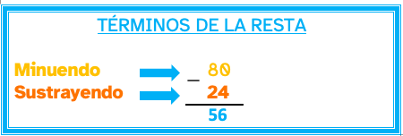

Para poder realizar vuestro panel/web es necesario que aprendas a manejar las medidas del tiempo.
¡Ánimo! ¡Será muy divertido!
Lectura facilitada
Para que puedes hacer el Panel/Web
Necesitarás aprender las medidas del tiempo
¡Ánimo, será divertido!
Para poder realizar vuestro panel/web es necesario que aprendas a manejar las medidas del tiempo.
¡Ánimo! ¡Será muy divertido!
Para que puedes hacer el Panel/Web
Necesitarás aprender las medidas del tiempo
¡Ánimo, será divertido!
Las unidades de medidas que utilizamos para medir el tiempo son : las horas, los minutos y los segundos.
Para hacer cálculos con estas unidades se utiliza el sistema sexagesimal . Llamado así porque sus unidades aumentan o disminuyen de 60 en 60. En vez de 100 en 100 como en el sistema decimal.

Al igual que hacíamos con el Sistema Métrico Decimal es importante utilizar una tabla para hacer las conversiones.
Para expresar las medidas del tiempo podemos utilizar una forma compleja, con varias unidades o incompleja con una sola unidad.

Las unidades que vas a utilizar para medir, son:
Utilizarás para esto el sistema sexagesimal.
Se llama así porque aumenta o disminuye
De 60 en 60, en lugar de 100 en 100
Es importante usar la tabla
Para convertir de una unidad a otra.
Para expresar el tiempo
Podemos hacerlo:

Practica con los conceptos aprendido usando el siguiente geogebra.
https://www.geogebra.org/m/KQuhMv3v (Ventana nueva)
|
Ejemplo: Pasar 2h 10 m 20s de forma compleja a incompleja 2h= 2x60x 60= 7.200 s 10m= 10x60= 600 s Suma= 7.200 + 600+10= 7.810s 7.810s |
Ejemplo: Pasar 1.500m de forma incompleja a compleja 1500: 60= 25 min Pasar 13.200 m 13.300 m : 60 = 221h 221hx60= 13.260. sobran 40min 221 h y 40 min |
Para sumar o restar cantidades debes colocar las horas con las horas , los minutos con los minutos y los segundos con los segundos.



A continuación os presento algunos ejercicios. Elige el o los que mejor sepas hacer.
¡Adelante! ¡Demuestra que estás preparado para pasar a la siguiente fase!
Descompón en la casa del tiempo
Pincha y arrastra cada número donde corresponda. Comprueba en tu libreta que los cálculos están bien realizados
Copia y resuelve las siguientes situaciones en tu cuaderno.
Realiza un video tutorial donde expliques y demuestres la forma incompleja y compleja de la medida del tiempo. También debes hacer referencia a cuando debemos usar una u otra y para que sirve cada una. Puedes ayudarte de Internet para realizar tu investigación. Accede a la guía de competencia digital.
¿Te gustan estos ejercicios ? Aquí te proponemos otros para que hagas los que desees.
¡Ánimo! Te ayudarán a estar preparado para la elaboración en grupo de vuestros panel/web.

Realiza las siguientes sumas y restas en tu cuaderno.
|
2h 48m + 1h 29 m = 43m 25s + 28m 52s= 1h 22m 13s + 1h 38m12s= 2h 35m 43s + 1h 35m 12s= |
3h 13m-1h 45m= 25m 20s - 18m 33s= 2h 42m 20s-1h 30m 33s= 2h 15m 22s - 1h 53m 18s= |
Realiza las siguientes sumas y restas en tu cuaderno.
| Elvira | Jacinto | |
| 1º Pantalla | 27 m 37 s | 25m 54s |
| 2º Pantalla | 45m 18s | 51m 23s |
| 3º Pantalla | 1h 5 m | 1h 49 s |
¿Quién ha tardado menos en superar cada pantalla? ¿Cuánto menos?
¿Quién ha estado más tiempo jugando? ¿Cuánto más?
Vas a crear una lista musical con tu móvil para escucharla durante los entrenamientos.
- La suma de las cuatro primeras canciones debe durar entre 10 y 13 minutos.
- La suma de las 8 primeras canciones no debe superar los 20 min.
- La lista en total debe tener una duración de 30 minutos aproximadamente.
Obra publicada con Licencia Creative Commons Reconocimiento No comercial Compartir igual 4.0